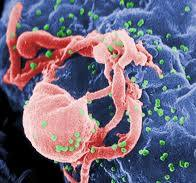

HIV (Human Immunodeficiency Virus) is a virus that attacks the body's immune system, weakening its ability to fight infections. If left untreated, HIV can progress to AIDS (Acquired Immunodeficiency Syndrome), a life-threatening condition.
HIV is a virus that targets and destroys CD4 cells (a type of white blood cell), which are essential for immune function. AIDS is the most advanced stage of HIV, characterized by severe immune system damage and opportunistic infections.
HIV spreads through contact with certain body fluids from an infected person, including blood, semen, vaginal fluids, rectal fluids, and breast milk. Common modes of transmission include:
Without treatment, HIV can weaken the immune system over time, leading to:
Although there is no cure, HIV can be effectively managed with:
Reduce the risk of HIV infection by following these measures:
Seek medical attention if you:
Reference:
HIVNote: HIV is a manageable condition with proper treatment. Early detection, medication adherence, and preventive measures can help individuals lead healthy lives.However, if your symptoms worsen, you can contact us through our social media channels below or visit your nearest healthcare center.